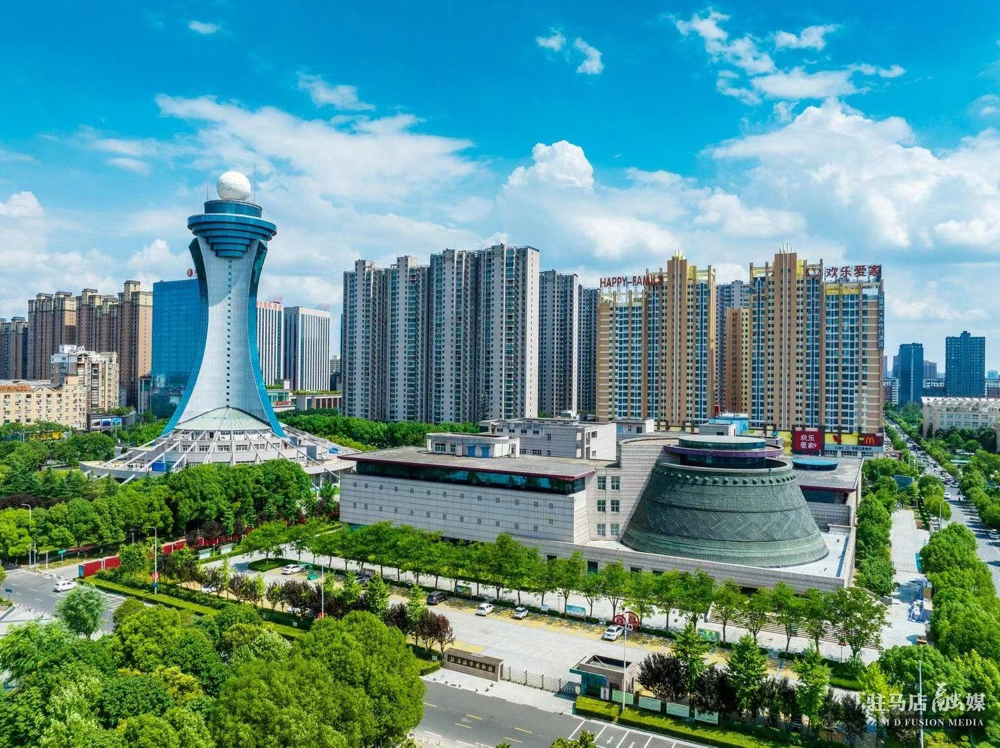
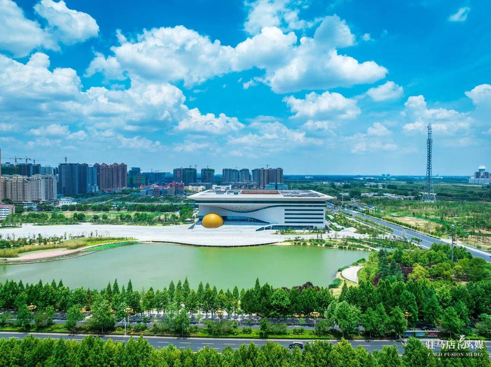

驻马店市，河南省辖地级市，别称汝宁、蔡州、天中， 位于河南中南部，地处淮河上游的丘陵平原地区，位于全国第三级地貌台阶上， 横跨南阳盆地东缘和淮北平原，处于亚热带与暖温带的过渡地带，亚具有热带与暖温带的双重气候特征 ， 总面积15083平方千米。
驻马店市位于河南省中南部，因明朝设立皇家驿站而得名，素有“豫州之腹地、天下之最中”的美称。 全市辖9县1区、1个省级城乡一体化示范区、1个省级经济开发区、1个省级高新技术产业开发区、 10个省级产业集聚区，总人口965万， 面积1.5万平方公里，是河南省重要的人口大市、农业大市、新兴工业城市。
驻马店是一座历史文化名城，文化厚重、人杰地灵。是华夏文明、中原文化重要发祥地之一。 是中华民族人文始祖——盘古创世纪活动的核心区域，是轩辕黄帝夫人、丝绸纺织鼻祖——嫘祖的故乡， 孕育出了盘古文化、嫘祖文化、梁祝文化、重阳文化、车舆文化、冶铁铸剑文化等灿烂文化， 哺育出法家代表人物韩非、“天下第一相”李斯、著名抗日民族英雄杨靖宇等一大批历史名人。
 